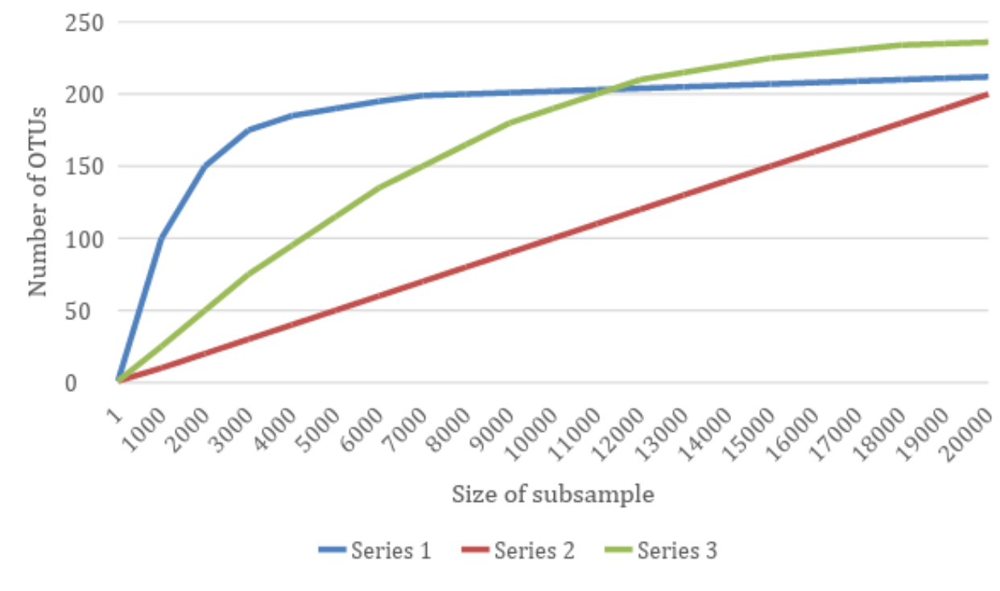

Chapter 12 Sequencing depth evaluation: rarefaction plot

The detected diversity partly depends on the sampling depths. An incompletely sampled community will appear less diverse than a fully sampled community.
To compare the diversity between samples we need to account for their different sampling depths. This can be carried out with rarefaction. This is performed by reducing all the samples at the same sequence count, by random sub-sampling of the sequences.
For example, if we rarefy to a depth of 2000 for all samples:
- Samples with depths of <2000 will be removed.
- Samples with depths of 2000 will be unchanged.
- Samples with depths of >2000 will have all reads removed except for a random subsample of 2000.
Equally sized subsamples are directly comparable among different samples. Additionally, we can progressively sample smaller subsamples from a sample to draw a curve of estimated alpha diversity. The shape of this curve is informative. If the curve plateaus, then increased sampling depth will not increase the estimate of alpha diversity (the community is fully sampled).
 Example rarefaction curve: We can see that Series 1 plateaus at ~7,000 sequences and Series 3 plateaus at ~18,000 sequences whilst Series 2 has not started to plateau.
12.1 Rarefaction command
Given an abundance table (and a phylogenetic tree for calculating phylogenetic distance), we can plot the rarefaction curve using different alpha-diversity metrics. Here, we will use diversity metrics (observed features, Simpson, Shannon, Faith’s PD) as well as an evenness metric (Simpson’s evenness).
Note: See the appendix at the end of this bookdown for details on each metric.
You may want to exclude --i-phylogeny rooted-tree.qza and --p-metrics faith_pd for markers such as ITS where you will not create a phylogenetic tree.
qiime diversity alpha-rarefaction --i-table table-dada2.qza \
--i-phylogeny rooted-tree.qza \
# Min and max depth for the plot
# These are based on your knowledge of the sample depths
--p-min-depth 5000 \
--p-max-depth 130000 \
# Evaluating diversity every 500 sequence depth
--p-steps 500 \
# Using average from 10 iterations for the diversity count
--p-iterations 10 \
--m-metadata-file metadata.file.txt \
--p-metrics simpson_e \
--p-metrics simpson \
--p-metrics shannon \
--p-metrics observed_features \
--p-metrics faith_pd \
--o-visualization rarefaction-curve.qzvThe command will take approximately 10 minutes.
12.2 Rarefaction visualisation
Load the output visualisation artifact into QIIME2 view. You can select the alpha diversity Metric to visualise as well as the grouping (Sample Metadata Column, where each BarcodeSequence represents a sample). Generally the observed_features metric is the best Metric to view.
The visualisation has two plots.
- Top plot = Alpha rarefaction plot.
- Primarily used to determine if the richness of the samples has been fully observed or sequenced.
- If the lines in the plot appear to “plateau” (i.e., becoming a horizontal line), this suggests that collecting additional sequences beyond that sampling depth will not effect the measured metric. E.g. a plateaued observed feature curve indicates there are no more feature to be detected.
- If the lines in the observed feature plot do not level out:
- The richness of the samples may have not been fully observed (because too few sequences were collected)
- Or it could be an indicator that a lot of sequencing errors remain in the data (which is being mistaken for novel diversity).
- Bottom plot = Number of samples (Y) against sequencing depth (x)
- This is important when grouping samples by metadata.
- It illustrates the number of samples with different sequencing depths for the groups in the chosen Sample Metadata Column.
- This is useful as when a sample’s sequencing depth is lower than the sequencing depth in the rarefaction plot it will no longer be considered in the rarefaction calculation. This can be seen as jitters in the rarefaction curve corresponding a decrease in number of samples.
- If the sample/s had a lower value than the average of the group the curve will jitter upwards, as the group average increases.
- If the sample/s had a higher value than the average of the group the curve will jitter downwards, as the group average decreases.
Choosing a rarefaction threshold for the normalisation step, is ultimately identifying the best tradeoff between:
- Losing sequencing depth within samples.
- Losing entire samples.
The best choice usually depends on the experimental design. If you have many samples per group you may be able to lose a few samples without losing statistical power for the analysis. If you have few samples per group you may need to choose a lower threshold.
Other considerations for rarefaction threshold:
- Does the samples in one group have lower depths? Although you may be able to retain all the samples in the other groups with a high rarefaction threshold you may remove too much of the low depth group.
- Should you samples have relatively high (e.g. soil microbiomes) or low (e.g. human gut microbiome) diveristy. With higher diveristy you will need a larger rarefaction threshold
Questions:
- Are any samples not fully sequenced?
- Comparing the two Locations, which has a higher evenness score (simpson_e)?
- Comparing the 2 Places, which has higher diversity value when considering most of the samples (faith_pd, shannon, & simpson)?
- What sampling depth (rarefaction threshold) would you use for the alpha- and beta-diversity analysis?
For the next step we will use a rarefaction size of 34,583. We have chosen this depth because:
- This will keep all the samples.
- The group based rarefaction curves (Location and Place) are plateauing at this depth.
- Many of the individual samples (BarcodeSequence) have plateaued with the others plateauing this depth.
- We do not have a lot of samples so we have prioritised keeping them rather than removing samples for a relatively small gain.
How do we know that the very exact number of 34,583 will keep all the samples? Looking at the Interactive Sample Detail section of the table-dada2.qzv visualisation we can see that the lowest depth of a sample is 34,583 (3K1E). Generally people will use the depth of a sample as the rarefaction threshold. E.g. if we were going to choose a rarefaction threshold of >50k we’d pick 58,605 as the exact threshold as that is the lowest sample depth >50k (from sample 1K2M). This allows us to use the maximum amount of sequences per sample.